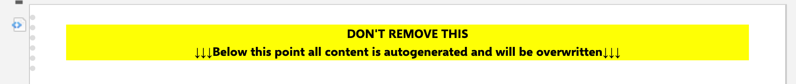

Live-Docs rendering¶
The high-level functionality and use cases are described in the feature documentation page. Here it is described how to set up the Live-Docs rendering.
Mixed Authority Mode¶
The mixed_config.yaml file describes how to set up mixed authority mode Live-Docs for automated rendering.
mixed_authority:
- template_directory: docs/source/examples/document_templates
project_id: TestProject
status_allow_list:
- draft
- open
sections:
section1: test-icd.html.j2
section2: test-icd.html.j2
instances:
- polarion_space: _default
polarion_name: id123
polarion_title: Interface23
params:
interface: 3d21ab4b-7bf6-428b-ba4c-a27bca4e86db
- polarion_space: _default
polarion_name: id1234
params:
interface: 3d21ab4b-7bf6-428b-ba4c-a27bca4e86db
- template_directory: docs/source/examples/document_templates
sections:
section1: test-icd.html.j2
section2: test-icd.html.j2
heading_numbering: True
text_work_item_type: myType
text_work_item_id_field: myId
work_item_layouts:
componentExchange:
fields_at_start:
- ID
fields_at_end:
- context_diagram
class:
show_title: False
fields_at_end:
- tree_view_diagram
instances:
- polarion_space: _default
polarion_name: id1234
section_params:
section1:
param_1: Test
Under sections the individual templates are listed to populate the marked sections from the Live-Doc. The following macro is used as dividers:
<div class="c2pAreaStart" id="IcdContent">
#set($statusList = ["draft", "planned", "inReview"])
#if ($statusList.contains($document.getStatus().id))
<p style="font-weight: bold;background-color: #FFFF00;text-align: center;">
DON'T REMOVE THIS<br>
↓↓↓Below this point all content is autogenerated and will be overwritten↓↓↓
</p>
#end
</div>
This looks then like the following in the Live-Doc:
Don’t forget to do the same for closing the section:

Configuration File Templates¶
The config.yaml.j2 file in the documents folder serves as the primary configuration template for the Live-Doc rendering service. This Jinja2 template defines how data from the Capella model should be structured and rendered into Polarion Live-Docs.
full_authority:
- template_directory: jinja/document_templates
template: icd.html.j2
heading_numbering: True
work_item_layouts:
componentExchange:
fields_at_start:
- ID
fields_at_end:
- context_diagram
class:
show_title: False
fields_at_end:
- tree_view_diagram
exchangeItem:
show_title: False
instances:
{%- for pl in model.search("PhysicalLink") %}
{%- if pl.ends %}
- polarion_space: ICDs
polarion_name: {{ pl.uuid }}
polarion_title: {{ pl.name }}
params:
physical_link: {{ pl.uuid }}
{%- endif -%}
{% endfor %}
Using this template, the service can populate sections of the Live-Doc with content based on the selected rendering mode. When working in Mixed authority mode, the marked sections in the document will be populated, leaving the unmarked sections untouched.